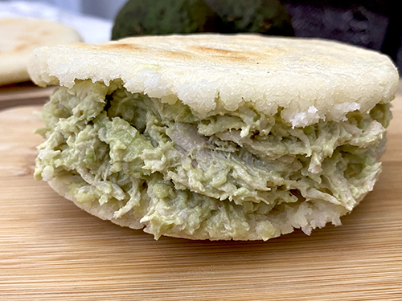
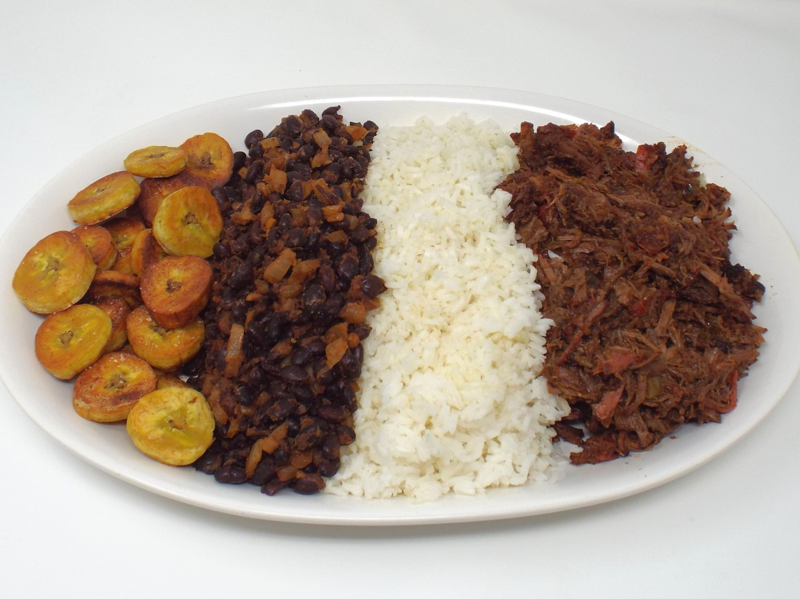
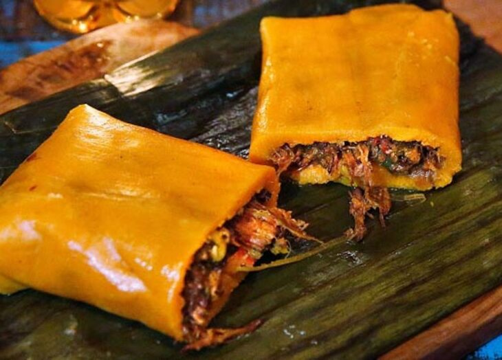

Bienvenidos a nuestra cocina
Este espacio está pensado especialmente para madres, padres, abuelas y abuelos que desean mantener viva la tradición culinaria de Venezuela utilizando ingredientes económicos, accesibles y llenos de sabor hogareño.
Recetas Simples: Arepas Reina Pepiada
Un clásico indispensable en cualquier desayuno o cena venezolana, rápido y rendidor.

Ingredientes principales:
- 2 tazas de harina de maíz precocida
- 2 tazas y media de agua tibia
- 1 pechuga de pollo sancochada y esmechada
- 1 aguacate maduro
- 2 cucharadas de mayonesa, sal y pimienta al gusto
Preparación rápida:
- Mezclar el agua con la sal y agregar la harina poco a poco hasta obtener una masa suave.
- Formar bolitas, aplanarlas y cocinar en un budare caliente por ambos lados.
- Triturar el aguacate, mezclarlo con el pollo y la mayonesa, y rellenar las arepas calientes.
Recetas Intermedias: Pabellón Criollo
Nuestro plato nacional, equilibrado y lleno de tradición para el almuerzo familiar.

Componentes del plato:
- Carne mechada guisada con aliños frescos (cebolla, ají dulce, ajo y tomate)
- Caraotas negras ablandadas con un toque de papelón o comino
- Arroz blanco suelto
- Tajadas de plátano maduro fritas
Recetas Complejas: Hallacas Tradicionales
El plato estrella de las reuniones familiares y festividades, ideal para preparar entre abuelos, padres e hijos.

Requiere dedicación para preparar el guiso con antelación, limpiar las hojas de plátano, amasar con onoto y amarrar cuidadosamente cada hallaca antes de sancocharlas.
Guía Rápida de Tiempos y Rendimiento
| Categoría | Receta Destacada | Tiempo Estimado | Porciones |
|---|---|---|---|
| Simple | Arepas Reina Pepiada | 25 minutos | 4 personas |
| Intermedia | Pabellón Criollo | 1 hora 30 minutos | 6 personas |
| Compleja | Hallacas Tradicionales | 4 horas | 20 hallacas |
| Dulces | Quesillo Criollo (Ver receta) | 1 hora | 8 porciones |
Comparte tu Receta Familiar
¿Tienes un secreto de la abuela que quieras publicar en Recetas Marisel? Escríbenos: